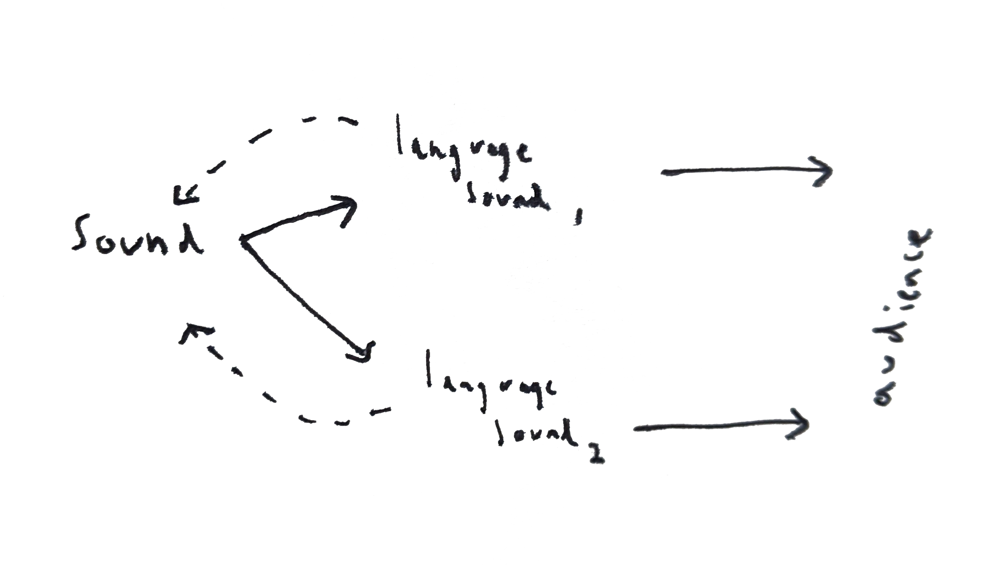

“Can a listener feel that they have any dignity when the values of music are registered against “ideals”? After all, the work and the joy of listening are in the internal refraction between what is and what is imagined. And there ain’t no respect in a prefigured imaginary.”
-Tony Conrad, “Slapping Pythagoras”
Working together, our senses and imagination massage sound into coherent forms. In this poem, we meet two voices, two streams of language, triangulated by some distant point beyond the misty horizon.
This might be a model for sociable music.
The reciever parses between two dispatches from...
Or it could be a model of transduction, in which an aesthetic experience is converted simultaneously into language and sound, which in turn generates new aesthetic experiences for the audience. This situation is enriched when a second narrator joins. Two instances of transduction bring the audience deeper into the fold, forcing new questions upon their ears… Suddenly there is a voice that verifies the other—yet it forks away, adhering to different rhythms, revealing and further obscuring the contours of a space no longer present. When two people speak, and a third listens to their accounts, a question emerges in finer detail: how is it that we hear, and what is it that we hear, when we listen closely with something or someone?